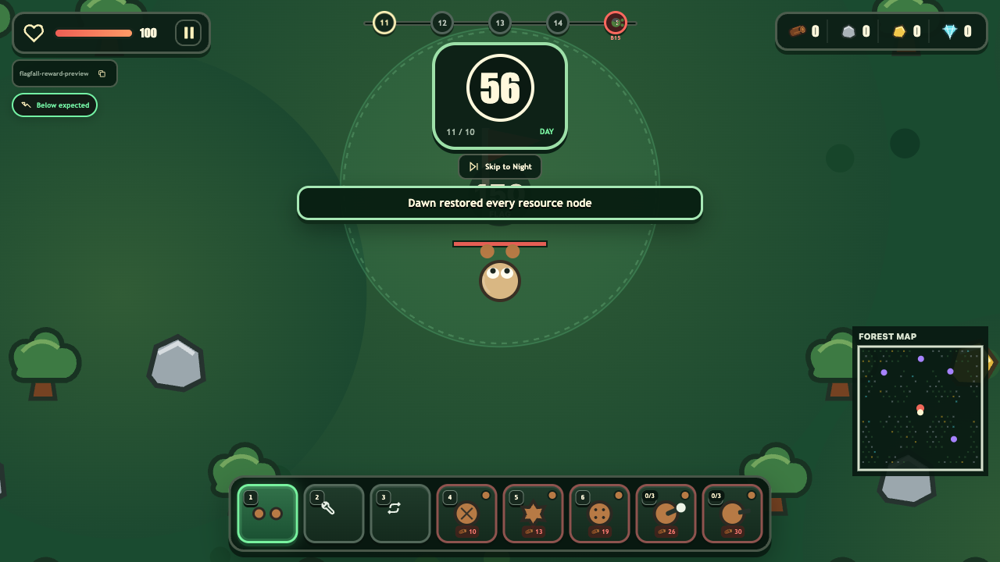
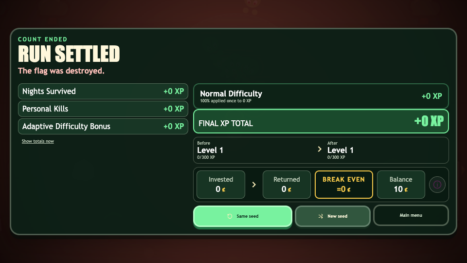

Endless mode now fights back.
The complete recommendation package is implemented together: bounded progression, exponential endless pressure, smarter composition, full wave deployment, delayed bosses, power-aware adaptation, scarce high-tier resources, and blocker recovery.
The solved build is bounded from every direction
Caps prevent infinite multiplicative scaling while the horde gains authored, deterministic counters rather than only larger piles of basic zombies.
Every upgrade capped
- Turrets stop at 8 total, +90% damage, +60% rate, and +60% range.
- All player, economy, structure, harvester, flag, and capacity upgrades have configured limits.
- Capped benefits disappear from card offerings.
Exponential endless curve
- Wave budget grows by 8.5% each endless night.
- Enemy health and damage grow independently.
- Boss health grows 55% each five-night cycle, with separate damage growth.
Real fort power recognized
- Effective turret DPS is compared against a configurable expected curve.
- Coverage thresholds add pressure at 45%, 65%, 85%, and 105%.
- Weighted player upgrade progress contributes to the adaptive multiplier.
Roster keeps evolving
- One seed-determined unused enemy joins every five endless nights, regardless of tier.
- The tracker previews each upcoming addition.
- Special caps scale and at least 35% of threat is reserved for non-basic enemies.
Bosses cap the assault
- The boss enters after a 12-second delay.
- All scheduled enemies deploy within 15 seconds.
- The night lasts at least 30 seconds and continues beyond it until the boss and scheduled horde are cleared.
Optional active resource sink
- Fort Pulse costs 24 gold and 8 diamond, once per endless night.
- It damages nearby special enemies only, requiring player positioning.
- It provides an emergency response without adding passive turret scaling.
Requested behavior and implementation
| Area | Implemented behavior | Configuration | Status |
|---|---|---|---|
| Dawn slides | When unlocks are exhausted, dawn starts at upgrade 1 of 2. When upgrades are also exhausted, the player can settle the run or continue. | upgradeCaps, choice availability | Complete |
| Spawn throughput | Portal schedules are distributed strictly through the first 15 seconds and are no longer blocked by the old active count. | nightSpawnCutoff, 900-entry safety bound | Complete |
| Boss timing | Delayed entry, 30-second minimum, overtime while alive, and ordinary wave clearance required. | bossSpawnDelay, boss cycle curves | Complete |
| Summons | Summoned zombies remain diagnostic population data but contribute no XP, kills, wave totals, or cleared-wave accounting. | countsTowardWave: false | Complete |
| Resource economy | Gold nodes fall to 18 and diamond nodes to 8, with 18 and 12 contained health respectively. | resource.counts, resource.health | Complete |
| Stuck fallback | A fully stationary zombie attacks an adjacent blocking structure after 1.5 seconds. Slow movement explicitly resets the fully stuck timer. | fullyStuckAttackDelay, 0.25 units/sec threshold | Complete |
Game UI at CrazyGames dimensions
The endless tracker correctly shows its five-night window and next seeded enemy. HUD resources, adaptive pressure, clock, minimap, and tool bar remain legible.


Green across the required gates
npm testnpm run buildnpm run visual:validateThe pre-existing summoner audio metadata mismatch was corrected in the generation script. Canonical audio bytes were preserved unchanged.
Implementation footprint
src/config.tssrc/rules.tssrc/enemy-registry.tssrc/choices.tssrc/game.ts
src/ui.tssrc/styles.csssrc/endless-balance.test.tssrc/playtest-fixes.test.tsscripts/audio-pipeline.mjs